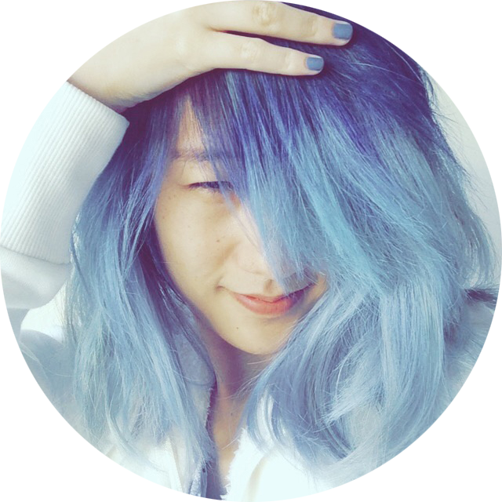

Susan Lin, Coding Designer & Illustrator
Susan is a Coding Designer & Illustrator based in a sketchbook. She is currently Senior Experience Designer @ OpenTable. She paints Ghibli Stained Glass and The Watercolor Forest. She is currently Freelancing and was Senior Visual UX and coding Designer at Trulia. She is a Carnegie Mellon MHCI alumni.
Susan also draws. You may know her for sketchnoting at events or watercolor paintings. Miyazaki inspires her like no other.
For her full work history, see her pretty PDF resume.